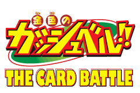
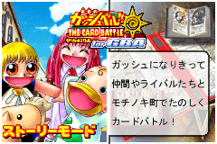

Konjiki no Gashbell!! The Card Battle for GBA (Japan)
Stateless / Passcode 📺 Joybus 💾 MultiBoot 🎮 4P Link 📡 Wireless
Cartridge Identity
- Game Code
BKEJ(FamilyBKE)- Header Title
GASH-CARDGBA- Maker / Revision
D9/ rev0- ROM Size
- 16.0 MiB (16,777,216 B)
- Save Media
None / Unknown- SHA-256
d01b486ec175fd37b1bc7d763d95c1e5e545b1694b8ab923bfad5504ea7cf242
Screenshots


Link Cable & Multiplayer Communications
This title contains detected communication capabilities: 📺 Joybus 💾 MultiBoot 🎮 4P Link 📡 Wireless.
Detailed protocol specifications, SIO registers, Joybus commands, and MultiBoot sequences are documented in the Link & Multiplayer Reference.
- Multi-Player SIO (4P)
- 16-bit ring network · SIOCNT (
0x04000128) literals:0x0004f8,0x007974,0x00c550· SIODATA32/SIOMULTI0 (0x04000120) literals:0x087cf4,0x08a934,0x08a9f8 - GameCube Joybus
- Register literal
REG_JOY_RECV(0x04000150) at offset0x02deb4 - Nintendo Wireless Adapter
- AGB-015 RFU driver signature
RFU-MBOOTat offset0xeab334 - Nintendo Wireless Adapter
- AGB-015 RFU driver signature
NINTENDOSio32IDat offset0xeab340 - Single-Cart MultiBoot
- Single-Cartridge MultiBoot (Download Play) client/server handler · Thumb SWI 0x25 (
0xDF25):0x1c2dae,0x326fb2,0x436474,0x452e7a· SDK signatures:MBOOTat0xeab338
Cartridge Storage Architecture: Stateless / Passcode
Zero non-volatile battery hardware: This cartridge PCB contains ROM only (no SRAM, Flash, or EEPROM chips). Progression is preserved via on-screen passcodes or session-only gameplay. No
.sav file is generated or required.
Text, Fonts & Scene Data
- Primary Text Encoding
- LZ77-compressed ASCII (
2ASCII strings ·200Shift-JIS runs ·2LZ77 ASCII blocks) - Font & VWF Indicators
- VWF Width Table 1bpp Font · BIOS SWIs: BitUnPack
0x10:12· LZ770x11/12:28· Huffman0x13:3· RLE0x14/15:6 - Scene & Packaging
51ROM pointer tables (≥32 entries,3≥200) ·2relativeu32TOCs ·191OAM metasprite hits
Hardware MMIO Subsystems
ppu_display0x8001f7c,0x8007f4c,0x8009060,0x80504c8,0x8050c8c,0x805a0cc,0x8079b70,0x807a5a4,0x807a8c4,0x807bfb8